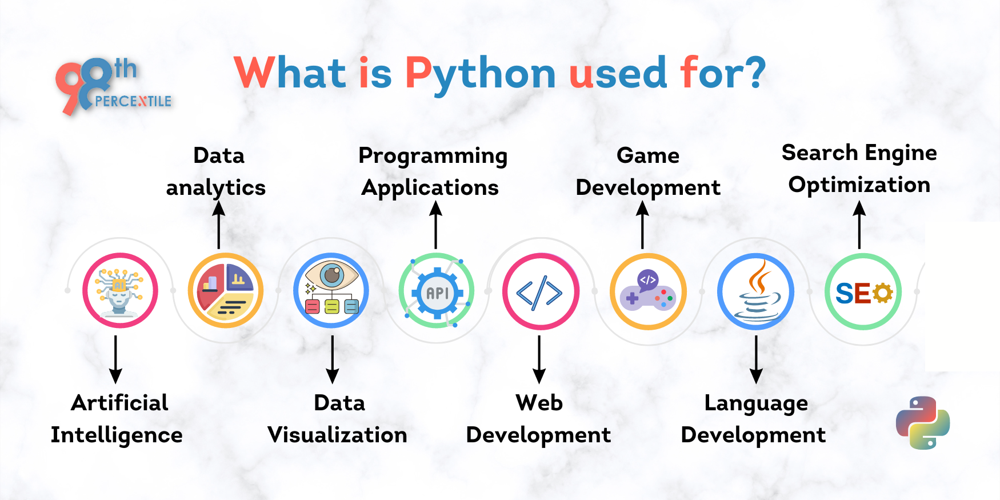

Python Language
1. What it is:
Python is a high-level, general-purpose programming language designed to be easy to read and writeIt was first created in 1991 by Guido van Rossum as a successor to earlier languages like ABC.
2. Key characteristics:
-
- Readable and expressive:
Python's syntax emphasizes clarity and brevity. -
- Dynamically typed and interpreted:
You can run code without a compilation step, which helps rapid development. -
- Multiparadigm:
Supports procedural, object-oriented, and functional programming styles.
3. Why it matters
Python's simplicity makes it highly accessible for beginners, while its extensive libraries let professionals build complex software quickly.
It excels in automation, scripting, web development, scientific computing, data science, and machine learning.

4. Usage in daily life
- - Data analysis and AI (NumPy, pandas, TensorFlow).
- - Web apps (Flask, Django).
- - Automation and scripting tasks.
- - Scientific and academic research.
5. Why it's worth knowing
Python's community is one of the largest in the world, with rich documentation, tutorials, and open-source tools — which keeps the language growing and relevant across industries.
Sources:
https://en.wikipedia.org/wiki/Python_%28programming_language%29https://www.geeksforgeeks.org/java/c-vs-java-vs-python/
https://www.britannica.com/technology/Python-computer-language
https://www.anaconda.com/blog/why-python